Introducing Daily Briefing
Your whole day.
One home screen.
Your briefing and Cal’s combined schedule in one app. Swipe between widget pages, tap any line to zoom into its full section, then swipe up to go home.
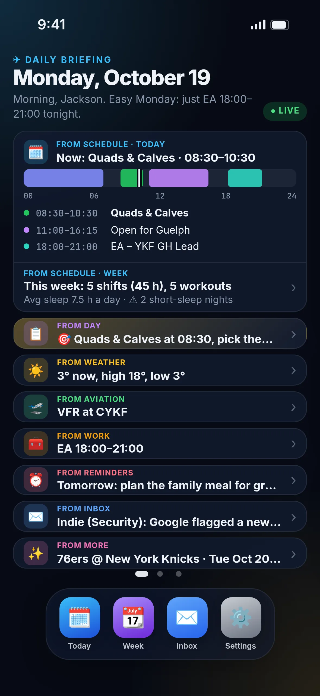
The briefing
A summary of
the whole app.
Home is built only from the app's sections. Every line carries a small "from Schedule", "from Weather" or "from Work" label, and tapping it opens that section.
- Today's schedule up top, with a live now-marker
- This week's shifts, workouts and sleep at a glance
- Focus, weather, aviation, work, reminders, inbox and more
Schedule
Today and the week, from Cal’s combined schedule.
Chartright and EA shifts, workouts, sleep and the Guelph windows, in Ontario 24-hour time. Free windows and short-sleep nights are worked out for you.
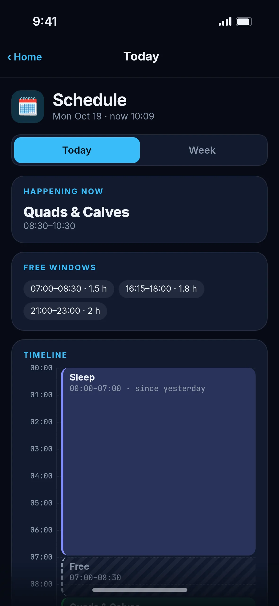
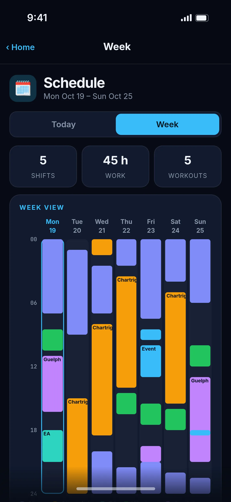
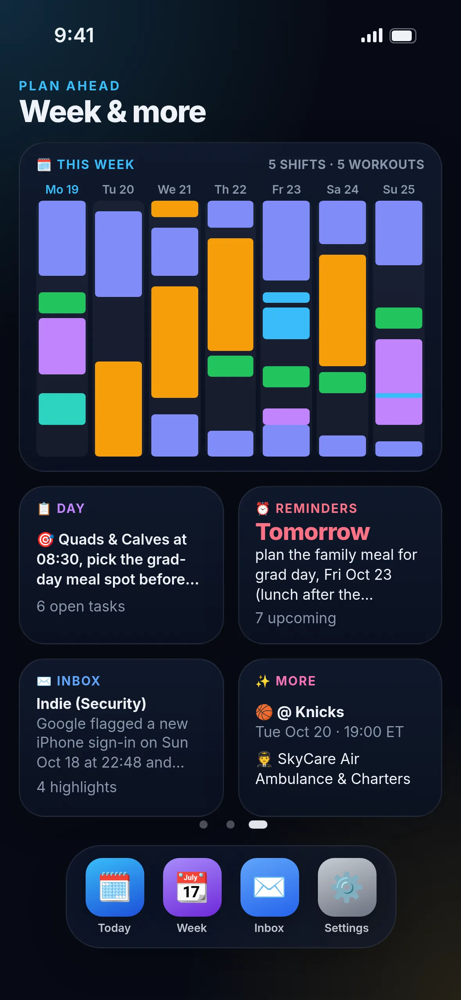
Widgets
Swipe between pages.
Tap to zoom in.
Each part of the briefing has its own widget. Tap one and it grows into a full screen with more detail than the card shows.
- Swipe pager, so home never scrolls
- A dock for Today, Week, Inbox and Settings
- Safe areas respected on every iPhone
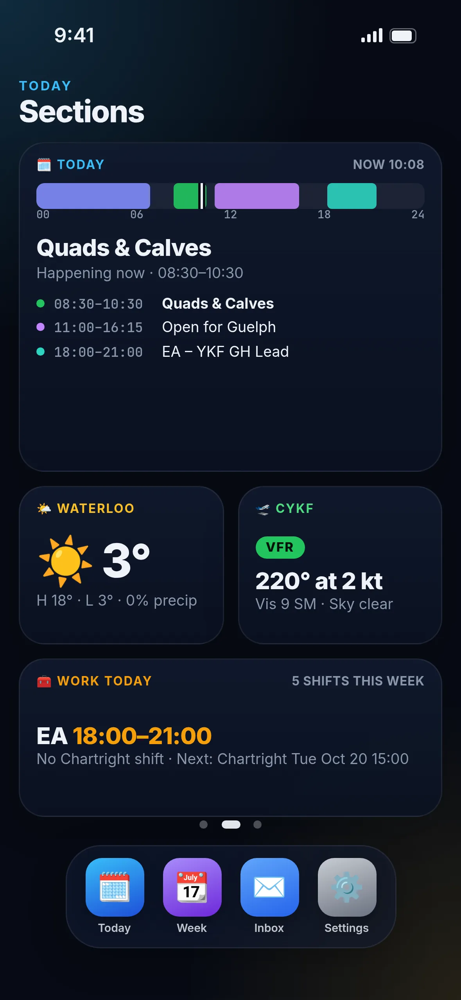
Field and work
Weather, METAR and TAF, and the shift ahead.
Every detail screen goes further than its card: decoded aviation weather, how the day's weather lines up with your plans, and upcoming shifts with rest checks.


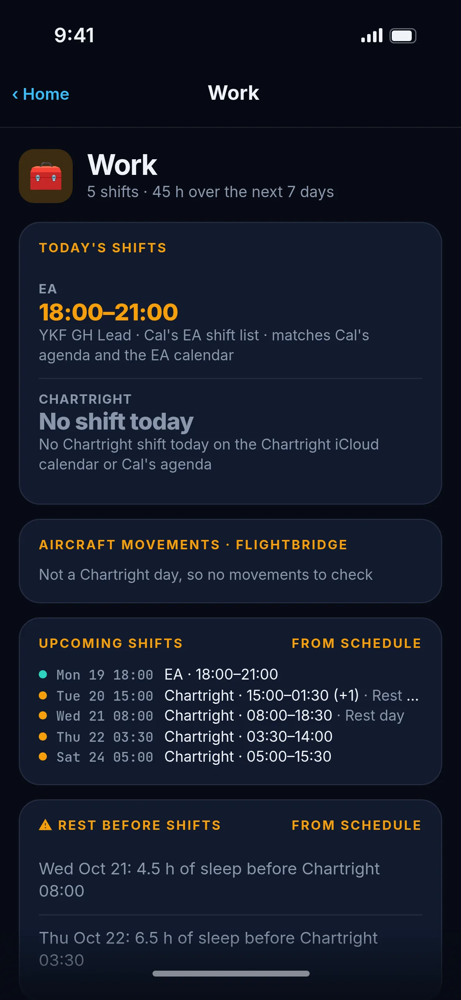
Your day
Focus, reminders and the inbox.
One clear focus, reminders grouped by when they're due, and highlights from your assistants. No money or financial info, ever.
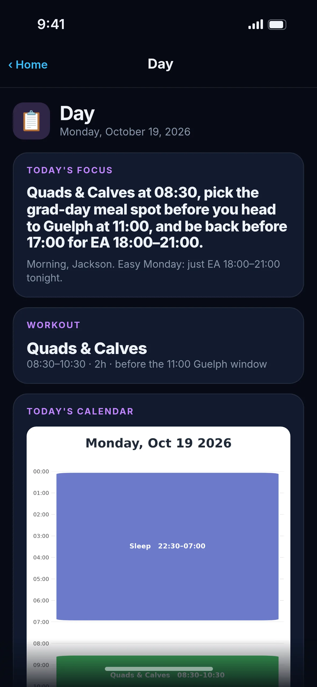
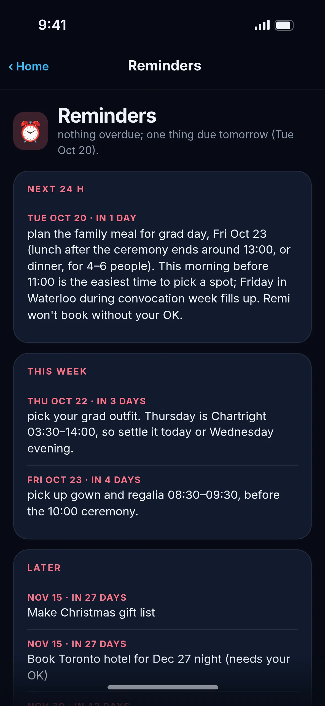
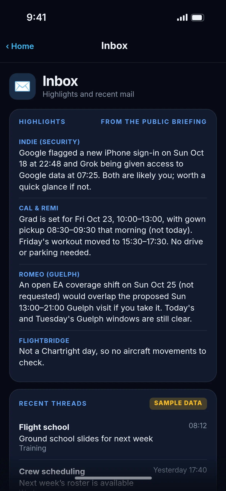
Gestures
Swipe up
to go home.
Drag the home bar and the screen shrinks back into the widget it came from, just like on iPhone. The More section has the pilot prospects, the next 76ers game and the briefing archive.
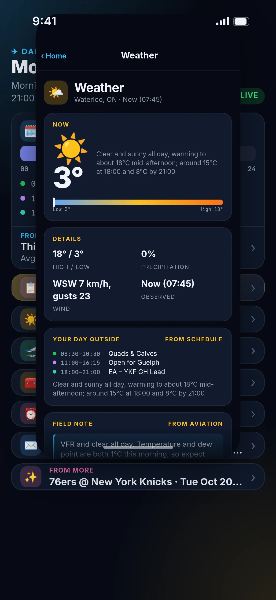
Colourways
Six looks, dark or light.
Midnight, Runway, Aurora, Cockpit, Daylight and Paper. Pick one in Settings.
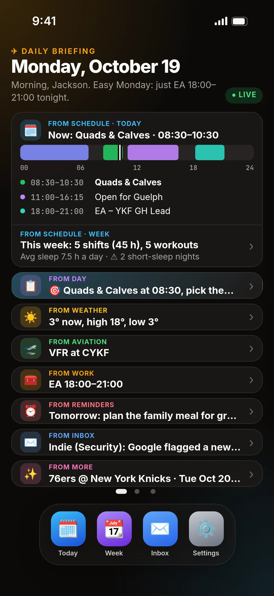
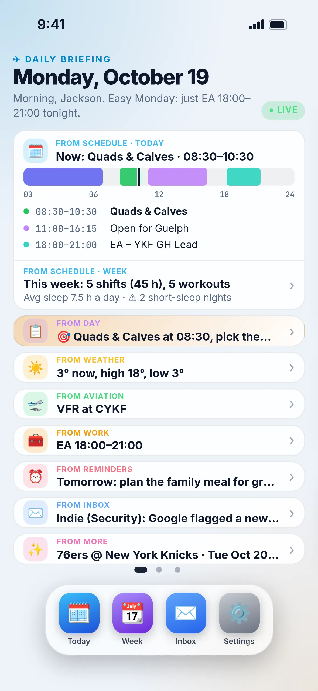
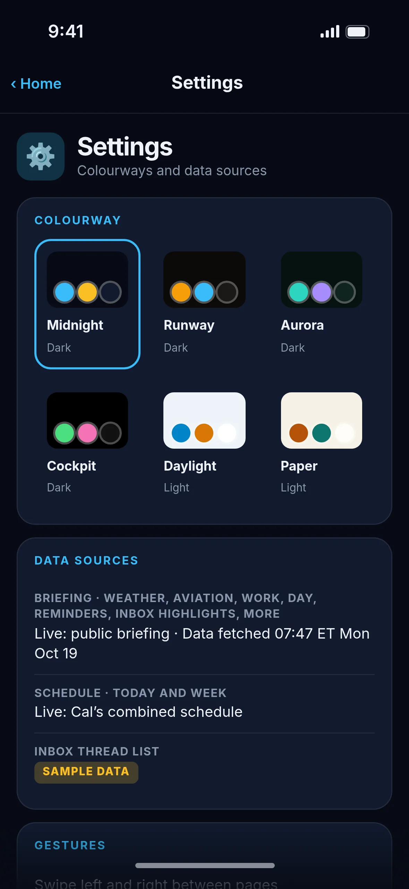
Your day, on one home screen.
Open the live preview on your iPhone, tap Share, then Add to Home Screen.